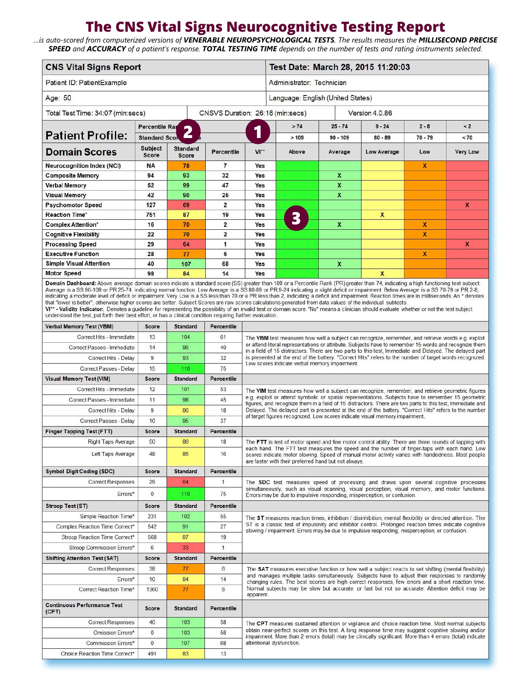

Brain Health Neurology
A Physician-Directed Cognitive Health Assessment and Plan
Michael K. Lowe, MD · Neurology Resident
Get Started →$399 · Cash Pay · Insurance Not Accepted
Your reason for being here shapes what we look for in your results — and what we do about them. Choose the line that sounds most like you.
None of these quite fit? See what is included — and bring your own question to the consultation.
The average primary care appointment runs 18 minutes. That is the national average — and it is not a criticism of primary care physicians, who are doing their best inside a system that was not designed for complexity. It is simply a fact: 18 minutes is not enough time to administer a validated cognitive battery, review nine domains of results, work through 45 research-identified risk factors, and build a meaningful, personalized plan.
The Brain Health Blueprint was built around a different premise entirely. An evaluation first — on your own time, at your own pace. Then a physician consultation that runs as long as it needs to, with no clock on the wall and no waiting room behind you.
The Brain Health Blueprint is a two-touch service: a self-administered cognitive evaluation followed by a single, comprehensive physician consultation. Here is what is included at $399:
The CNS Vital Signs assessment generates an auto-scored report across nine cognitive domains, benchmarked against age-matched normative data. Color-coded and immediately readable — by you and by Dr. Lowe before your consultation.

Sample CNS Vital Signs report. Individual results vary. All reports are reviewed with you personally during your physician consultation.
Insurance reimbursement models are built around 18-minute appointments. Research confirms it: that is the national average for a primary care visit. Eighteen minutes is not enough time to administer a validated cognitive battery, review nine domains of results, work through 45 risk factors, and build a personalized plan. It is not enough time to do this work properly.
By operating outside the insurance system, this service answers to you — not to a payer. The consultation runs as long as it needs to. The plan is built around your results, not around a billing code.
Schedule your Brain Health Blueprint today. One flat fee. Cash pay. No waiting rooms. No clock on the wall.
Assessment · Physician Consultation · 45-Factor Risk Review · Action Plan · Book · Supplement Access
Schedule Online →or
Request a Date and Time via Email →Anyone who wants an objective, physician-reviewed picture of their cognitive health. You do not need a referral, a diagnosis, or a prior concern. Most people who book it are simply paying attention.
CNS Vital Signs is a validated, peer-reviewed computerized neuropsychological battery used in clinical research and physician practices worldwide. It measures nine cognitive domains: composite memory, verbal memory, visual memory, processing speed, reaction time, complex attention, cognitive flexibility, executive function, and psychomotor speed. Results are auto-scored and compared against age-matched normative data — giving you an objective picture of where you stand, not just how you feel.
No. The Brain Health Blueprint is a health assessment and educational consultation — not a diagnostic evaluation and not a substitute for clinical care. It provides an objective picture of your cognitive performance and a structured review of modifiable risk factors. If results raise concerns that may warrant further neurological evaluation, Dr. Lowe will discuss next steps with you during the consultation.
As long as it needs to. There is no hard stop. Most consultations run 45 to 60 minutes, but if there is more to cover, we cover it. That is precisely why this service operates outside an insurance-driven appointment model.
Absolutely — and they are encouraged to. Family members and caregivers often provide important context, and their presence means the plan can be supported at home from day one.
Yes — and longitudinal tracking is one of the most clinically valuable aspects of the CNS Vital Signs platform. Repeating the assessment annually or biannually allows you to track changes in your cognitive performance over time, which is far more informative than any single snapshot.
This service is not billed through insurance and does not generate insurance-compatible clinical documentation. Payment is collected at the time of booking.
The Brain Health Blueprint is a health assessment and educational consultation. It does not establish a traditional physician-patient clinical treatment relationship and is not a substitute for care from your primary physician or a treating neurologist. If you have active medical concerns, please consult a licensed physician in your state.